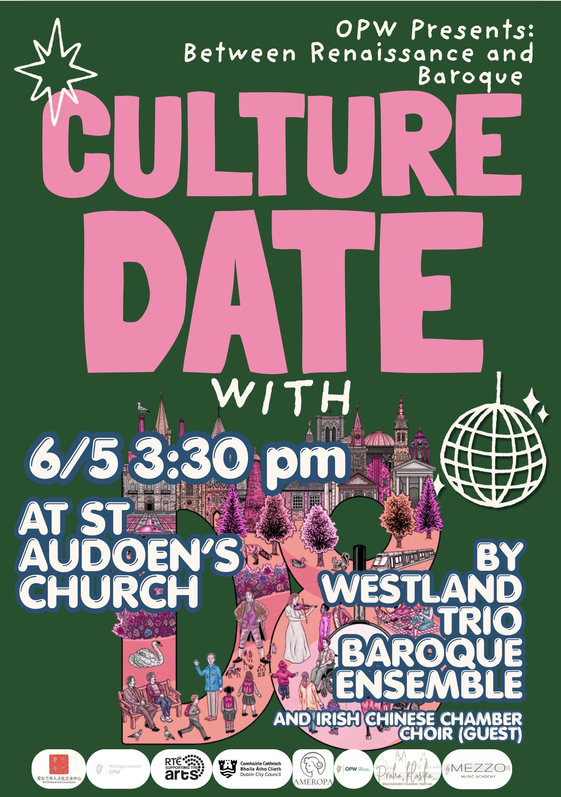
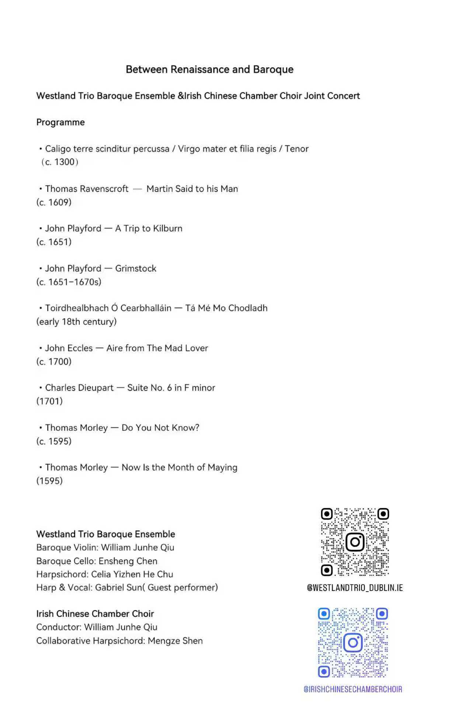

Between Renaissance and Baroque

Project Overview
On 6 May 2026, I joined my fellow musicians from the Westland Trio Baroque Ensemble for Between Renaissance and Baroque, a concert generously supported by Ireland’s Office of Public Works (OPW). As a guest performer, I curated a selection of medieval and Renaissance repertoire, singing and introducing a late thirteenth-century English motet and performing pieces from John Playford’s The English Dancing Master on the harp. The programme was warmly received by the audience.

Black and Grey
“Black and Grey”, with its another name "A Trip to Kilburn", is an elegant and fluid English country dance first published in the seventh edition of John Playford’s The Dancing Master in 1686. Although the collection is often referred to generally as The English Dancing Master, “Black and Grey” did not appear in the original 1651 edition, but was introduced in the seventh. Playford was principally its publisher and compiler, and no reliable evidence has yet identified the melody’s original composer.
Set in A minor and duple metre, the tune follows a concise AABB structure. Beneath its subdued, slightly shadowed tonal character lies a clear and continuous forward-moving dance pulse. The original choreography is a triple-minor longways dance for three couples: the dancers form circles, exchange places, move around one another, and turn while holding right or left hands, progressing along the set through continually shifting formations.
In this sense, “black” and “grey” are not static or sombre shades, but seem rather like two figures of contrasting tones—approaching, parting, crossing, and meeting again within the melody’s restrained yet agile motion. During the eighteenth century, the tune also became associated with the dance “A Trip to Kilburn,” demonstrating its lasting circulation and adaptability within the English social-dance tradition.